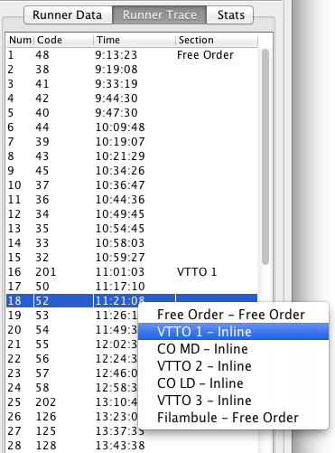
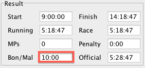

Multi Sections Race
The multi sections race format in Geco can help with the organization of adventure racing or unconventional orienteering race. The main feature of Geco for multi-sections is that it enables to freely mix inline and free order sections on the same ecard. There is no need to start/end with a unique “special” section, or to use control cards whenever you want to mix a free order section inside an inline race.
However, Geco can not support all types of organization, so read the next section to see it fits all your need.
Features for Multi Sections
- Support in-order sections mixing inline and free order controls: you can start with an inline section, then have a section with free order controls, then another inline section. However, all sections must be taken in order (no free order between sections - see how One Man Relay works in Geco if you need that).
- Automatically detect section limits when processing punches (including MPs and skipped sections); if Geco does some mistake in section detection (it can happen in some case), you can still fix it by manually setting section limits.
- Ability to neutralize a section. Section can still have multiple controls and even time penalties, but section time is subtracted from race time - useful when you want to suspend time for security.
- Each control can have a custom time penalty.
- Ability to manually set a time bonus/malus for each entry. You can take into account a manual section this way.
- Custom output formats for section splits and results.
- Fully compatible with other Geco features: Geco displays a unique trace with all punches and section markers; it can automatically detect the most fit multi-sections course based on trace.
Setting up Courses with Multiple Sections
Courses in multi-sections are managed the same way classic or free order courses are managed. A course is just a list of controls that you create/import in Geco. The difference is that you later annotate the list to mark the beginning of each section. All controls between a section start and the next section are then part of the section.
Creating/Importing Courses
A prerequisite to create multi-sections courses in Geco: for each course, you should build the full list of controls to be taken; they should appear in the same order as the sections they belong to.
For example, let’s say you define a course with three sections:
- section A is inline with controls 31, 32, 33;
- section B is free order with controls 100, 101, 102;
- section C is inline with controls 34, 35, 36.
Sections A, B, and C must be taken in order. Then the list of controls looks like 31, 32, 33, 100, 101, 102, 34, 35, 36.
Once the list of controls is defined for each course, you can create a course with this list or import it through XML.
Setting up Section for a Course
-
Select the course in the left panel then, in the right panel, the first control of the section you want to define. The Section… button becomes enabled and you can click it to open the section editor
-
Fill in details about the section you want to create: section name and type (inline or free order). You can come back later.
{kind=link}
3. Click Save and the section is created.
4. Repeat until all sections and all courses are defined.
Each time sections change, Geco computes the list of controls for each section: it starts at the first section control and ends just before the next section start (two exceptions: first sections starts with start time and last section finishes with end time).

In the above example, the first section “VTTO” starts with control 32 and ends with control 48. Free order starts at control 201 and takes all next controls.
If you want to change or delete a section, you can do it through the Section… editor. If you want to move a section around, you must delete it and create it again.
Section Neutralization
In the section editor, you can define a section as neutralized. Controls in the section will still be checked (and penalties added), but the total time in the section (from first control to next section) will be subtracted from the official time.
Custom Time Penalties per Control
Each control can have a custom time penalty which you can directly modify in the control table. To speed up the process, you can use the section editor which lets you reset time penalties for all controls in the section.
Beware that the penalty is per control. So if you reuse a control across multiple courses, it gets the same time penalty everywhere.

Manual Modifications for a Multi Sections
Fixing Section Limits by Hand
In some edge case, Geco may fail to properly recognize section limits and will compute a faulty trace. You can fix such case by manually setting section limits in the runner trace panel.
- Select the runner in the runners tab then the trace panel.
- Right-click on the punch where you want a section to start for this runner trace.
- Select the section in the contextual menu opened by Geco.

Geco will compute the runner trace with the updated section start and other section limits. If multiple sections are off-limits, you can iterate through this process until it gets correct.
If you want to restart the process, you can still click the Recheck button and get the original trace again.
Adding a custom time bonus/malus
There might still be some case/rules which you can not handle through ecards. Geco provides a custom field for each runner, so that you can enter manually a bonus/malus time to be added to the official time. Beware that this field is reseted if you recheck runner status.

Results with Sections Data
Multi-sections race is fully compatible with Geco results system.
- Section splits: Geco can compute section times and print them along with control splits, so that there is an immediate feedback about each section. Just select the
splits_sections.mustachetemplate in the stage/template configuration. - Section Results: in addition to the normal ranking and splits per control, you can export split results per section for each multi-sections course.
{kind=link}